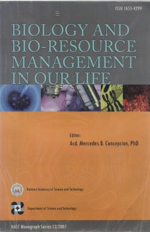

Mercedes Concepcion, Ph.D.
Year Conferred: 2010
Field of Specialization: Sociology, Demography, Statistics
Status: Alive
Concepcion’s research covered the fields of fertility, mortality, employment, labor force, women’s development, and population structure. She’s been called the “Mother of Asian Demography” for her tireless efforts in the field. Her research on the Filipino family has influenced both Philippine and international policy-making, eventually leading to her receiving the United Nations Population Award in 2005.
Educational Background:
- University of the Philippines, Diliman, Quezon City, B.S. Chemistry, 1951
- University of Sydney, Australia, Certificate in Statistics, 1954
- University of Chicago, USA, PhD in Sociology, 1963
Academical Researches
Concepcion, M.B., (1990) The Philippine population: Where is it now? Solidarity
Concepcion, M.B. Mundigo, A.I. Reeler, A.B., (1991) Social aspects related to the introduction in a birth control vaccine In: Fertility, G. Ada and P.D. Griffin (eds.) UK, Cambridge University Press
Concepcion, M.B., (1993) The Philippine population problem: Myth or reality Perspective Volume 13, No. 2
Concepcion, M.B., (1994) The Philippine population problem: Myth or reality Philippine Studies Volume 42
Concepcion, M.B., (1994) Social science research on reproductive health Journal of Philippine Development Volume 21, No. 1&2
Concepcion, M.B., (1994) Cairo: The road to consensus Perspective Volume 14, No. 4
Concepcion, M.B., (1996) The graying of the Philippine population Perspective Volume 16, No. 3
Concepcion, M.B., (1990) The Philippine population program Sollicitudo , No. 9
Concepcion, M.B., (1993) Population growth in Southeast Asia: Pushing the limits. Southeast Asia's Environmental Future, The Search for Sustainability, United Nations University Press
Concepcion, M.B., (1993) The situation of elderly women: Available statistics and indicators Joint publication of INSTRAW and the United Nations Statistical Division, Dominican Republic, ISTRAW
Concepcion, M.B., (1993) Population growth and sustainable development in Southeast Asia: Crisis Population Dynamics in Nepal, Eal Kumar, K.C. (ed.), Tribhuvan University, Central Department of Population Studies
Concepcion, M.B., (1993) Policy responses to population growth. In: Population and Development in the Asia and the Pacific Region, The Austrilian Academy of Science, Canberra
Concepcion, M.B., (1994) Implications of increasing roles of women for the provision of the elderly care In: Ageing and the Family, United Nations Publication
Concepcion, M.B., (1994) Philippine fertility-decline or retardation? Academy of Science and Arts
Concepcion, M.B., (1999) East and Southeast Asia and Oceania: Diverse and populous in Population Bulletin Special Issue
Concepcion, M.B., (2003) Reflections on the Asia and Pacific Population Conference Asia-Pacific Population Journal
Concepcion, M.B., (1998) Population, resources, and environmental policy in the social sciences. Transactions of the National Academy of Science and Technology Volume 20
Concepcion, M.B., (1985) The Philippines: population trends and dilemmas Philippine Population Journal Volume 1, No. 1
Biology and Bio-Reasource Management Book By Mercedes Conception
Dr. Concepcion was known for her extensive research on population such trends and its implication on social development and economic growth.
She also conducted research on urbanization, family planning, the elderly and aging which helped our Lolo's and Lola's look younger and fresher.

Renowned Works
1. Indicators of aging
2. Conducted studies on problems of population and birth control
3. Participated in reviewing research papers and projects for funding